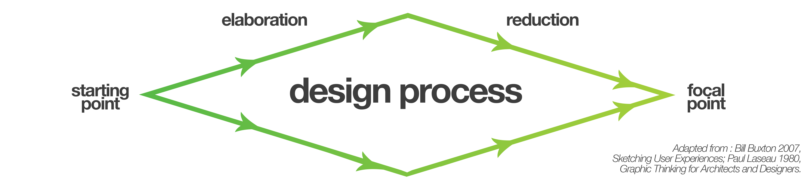
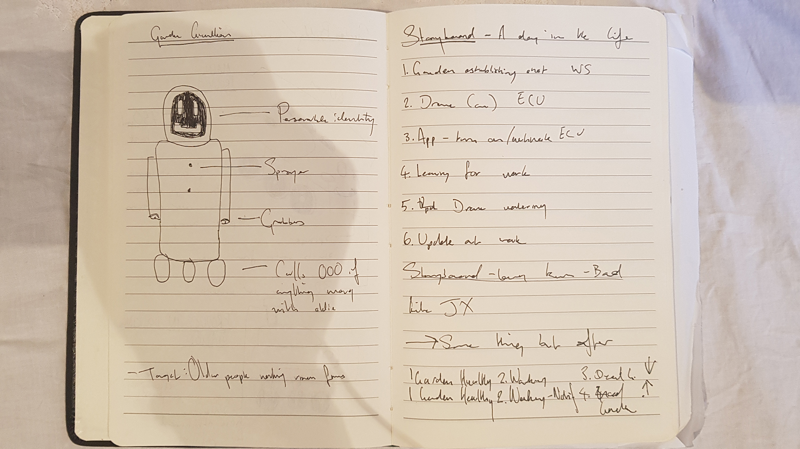
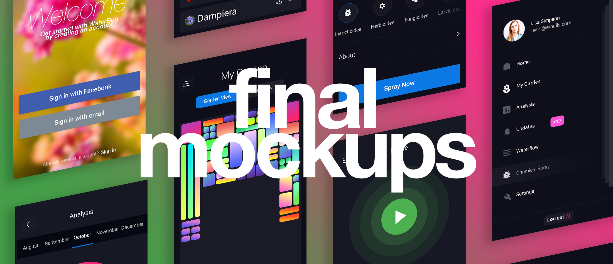

The WaterBug is an autonomous 'Roomba-like' drone that waters your garden for you that you can control and track with a companion application on your smartphone. This portfolio documents how my team and I created its companion
app.
Project purpose
This project was conducted as part of the Bachelor of Design Computing at The University of Sydney and began with a design brief form our unit coordinator of the Interaction Design Studio, Hamish Henderson. The project had 5 main objectives:
To apply a user-centric design process that includes grounding (analysis) and concept generation (synthesis) as well as validation (in the form of user evaluation).
To acquire low-fi prototyping skills across multiple interaction modalities, including desktop-based and mobile interfaces, with an emphasis on sketching as a design method.
To develop and apply hi-fi prototyping skills for desktop-based and mobile interfaces.
To experience group-based design work and to learn how to work collaboratively on a large design project.
To learn how to respond to a design brief and meet external requirements in a design project context.
Problem space
It’s 2018 and autonomous vehicles are becoming prevalent, from Google and Tesla’s cars, to DJI’s drones, to China’s proposed automated transport system. As such, our project brief was designed to push us into this emerging field and consider
users might control these vehicles, how we might design the interfaces between users and AI.
The idea was to conceptualise and prove the need for an autonomous product, then design and develop the user interface for it. Since autonomous
vehicles is still a very broad field, we split into teams and chose a field to focus our research. We chose urban agriculture; that is any farming or gardening in inner city environments. We felt that agriculture in itself was an easy
target for automation and urban agriculture was both more accessible than the more commonly considered rural agriculture and there would be more room for innovation as it's a more overlooked space.
Team Jupiter
To complete the project brief we formed teams to break up the workload and complement each others strengths
Tom Clarke
JX Cao
Jason Moisiadis
Abhinav Bose
Methodology

We started this project with research that led us to create problem statements from potential users and ideated solutions (elaboration), we kept elaborating until we felt we were happy with our ideas. Then we put our ideas under scrutiny,
validating them with user research until we cut down the ideas that didn’t appear to effectively solve real problems (reduction), once we settled on an idea we iterated and reduced it further, distilling it to the final prototype.
Research Methodologies
To tackle the area we split the sector up into 4 main stakeholders that we thought would offer the most insight for our
project; Council, Developers, Architects/Developers and Decentralised farmers.
Foundational research
I built the basis of my understanding Urban Agriculture from online resources such as council documents, media reports and blog posts.
of research
Academic Research
I accessed the University Library and online research databases such as ABARES, AgEcon, and JSTOR.
Semi-Structured Interview
I contacted a City of Sydney Employee to gain an understanding of the urban agriculture space from the council's perspective.
Contextual Observations
I attended a workshop at the City of Sydney's community farm in
Tempe and took notes on the plants, layout, participants and organisers
Contextual Interview
I interviewed the attendees and organisers of the city agriculture workshop so I could understand what made people go there, how effective the workshops
were and find out if there were any pre-existing issues in the space
Personas
I distilled my findings into three personas that reflected three potential users whose needs we would have to meet.
You can view these personas in the image carousel below the research findings section.
Findings
During the foundational research stage, I found reviewing documents from The Yarra Council in Melbourne concerning their urban agriculture strategy. The key takeaway from the report was that community gardens
are viewed as a ‘holistic solution to an array of social issues in the community’.
The academic research enlightened me to a longitudinal study by Dr James, S and Professor O’Neil on behalf of the NSW Department of Planning looked at all the agriculture projects in Sydney over 20 years
and consistently found, year after year, the scale and value of Sydney’s agriculture was severely undervalued by the ABS, with underestimations by 10 - 100 million.
Following these rounds of formal research I relaxed things a bit and got coffee with a City of Sydney employee in the cultural strategy department for a semi-structured interview. He hammered home the social benefits
of community gardens, particularly for those who are elderly or disadvantaged.
My contextual observations at the City of Sydney community garden workshop in Tempe was that there clearly wasn’t any issue with scale or funding, which went against my expectations. Different demographics
had different motivations for being into urban agriculture; the older participants were there more for the social element whilst the younger participants were there to learn and engage with farming from a sustainability standpoint.
After we developed our personas and problem statements we set out to work creating concepts, we each came up with 2-3 potential solutions that incorporated autonomous vehicles. Below you can see the two that I came up with:

The first sketch is a concept is called Garden Guardian and is somewhat based on the aged care robots that are starting to be implemented in Japan. The idea was mainly taken from problem statements found
in my field of research, exploring the holistic benefits of gardening, particularly for those who are elderly, it gives them a purpose to get out of bed and keeps their body moving.
The second is WaterBug (the concept we ended up running with) an autonomous consumer drone, similar to the iconic ‘iRobot’ vacuum cleaner drone, only this drone resembles more closely an R/C toy combined
with a ‘Super Soaker’. This little all terrain vehicle is designed to navigate your backyard autonomously and water each plant according to its specific needs before refilling and recharging at its docking station.
Following this round of ideation, we were ready to move onto user testing so that we could begin the iteration and reduction phases of our design process. WaterBug was selected along with Jason's Roaming Garden and LifeCycle as well as Abhinav's
Air Agriculture.
Early Sketches
Now that we had our 4 concepts it was time to flesh them out and test them out. We each developed hand drawn sketches that were then fed into prototyping tools; POP/Marvel, Invision and framer. We used these very rough sketches to test out the
user flow of our interfaces with test subjects, using ‘Think aloud’, observations and post test interviews to ascertain our results. Below you will see two carousels, one displaying the early sketches I developed for WaterBug’s onboarding and
installation screens, early sketches for system functionality by JX and the next shows us testing with users in the field. The test subjects we had chosen were young attendees of the Jubilee Park Community garden space that were aged 19 - 31.
Waterbug Sketches
Early User Testing
Findings
Overall user reception to the application and its user flow was positive. However it was in this initial round of testing where we first encountered the dichotomy between different groups of our potential users. Since this product is supposed
to be a mass-market consumer electronics device we had to balance the needs of the more technologically savvy ‘super-user’ with the needs of the less adventurous common user. This meant numerous iterations of calibration, a ‘two steps forward,
one step back’ approach, experimenting with more technical or accessible designs. I’ll be elaborating further on this in the wireframe stage.
Overall user reception to the application and its user flow was positive. However it was in this initial round of testing where we first encountered the dichotomy between different groups of our potential users. Since this product is supposed
to be a mass-market consumer electronics device we had to balance the needs of the more technologically savvy ‘super-user’ with the needs of the less adventurous common user. This meant numerous iterations of calibration, a ‘two steps
forward, one step back’ approach, experimenting with more technical or accessible designs. I’ll be elaborating further on this in the wireframe stage.
Wireframes
This highlights key changes in the 3.5 iterations of the user interface, detailing shifts closer towards a balance between usability and capability.
Results
The idea behind this round of testing and evaluation was understand whether or not this iteration presents an interface that meets the best of both worlds; to see how a range of users respond to our interface and whether or not we’re meeting
both parties specific needs. As previously mentioned, after our user research we decided that a mass market, consumer electronics device would be the best user group for our product. We thought it would be easy to design a one-size-fits-all
interface. However across our various rounds of iterations and testing we battled with meeting the expectations of our users. We kept finding the designs were often only good at accomodating to one specific user group; either a technical
subset of users who wish to glean the maximum functionality of our product, or the passive user who wants to use the autonomous service to find a solution wherein they can switch their brains off. To resolve this dichotomy we developed
a ‘soft induction’ approach that familarises users quickly and easily to the setup and functionality of our device and interface then we allow users a choice to either let the drone function autonomously at default settings or to
let power users who proved to be more inquisitive anyway, to navigate through the UI to find the additional functionality.

Process
After we broke down exactly what we needed for user flow from our wireframes, I designed each of these in Adobe Photoshop. I incorporated a dark theme so that it is less battery dependent on AMOLED screens. I opted for a futuristic
UI to complement the futuristic nature of an autonomous gardening drone.
High Fidelity Screens
I developed these base screens and the rest of the UI was fleshed out in the prototyping phase. I opted to use Adobe Photoshop after initally attempting with Sketch and Figma because I found it gave me more flexibility
and creative freedom in fine tuning designing individual assets to create a more visually impressive design and because I knew we were developing the prototype in Adobe XD so transferring the files over would be a
breeze.
Waterbug Prototype
This is the final prototype of our Waterbug interface. It was made in Adobe XD and was designed to give users the experience of using a real application.
It showcases the main proposed features
of the companion app.
Since the research had already been completed and designs drawn, creating the prototype was straightforward, we simply imported the designs into XD and spent a couple of days animating
transitions and connecting screens.


.png)
.png)
.png)